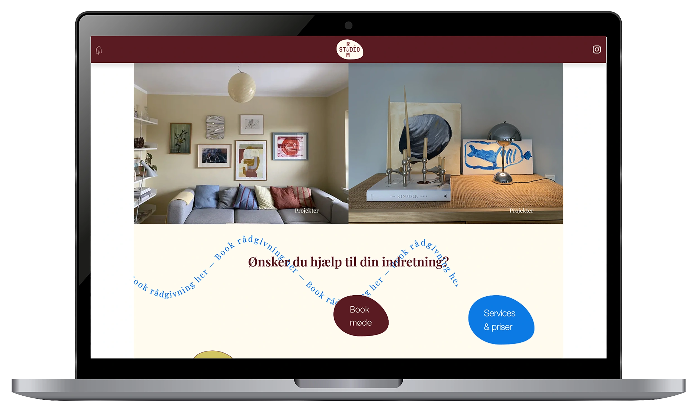
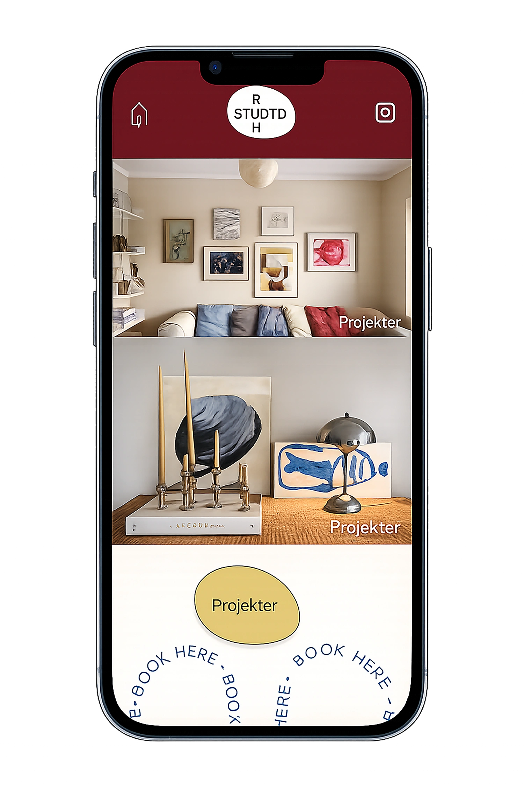
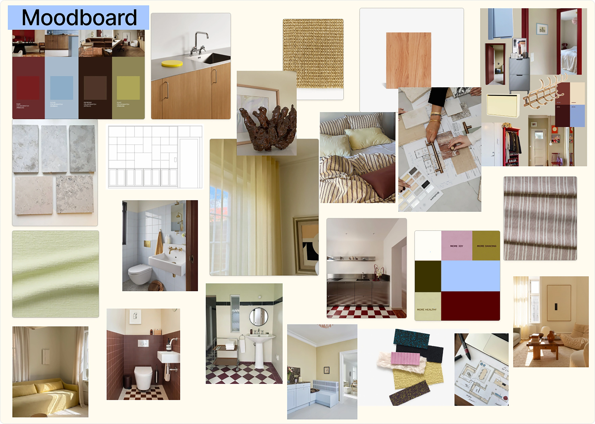
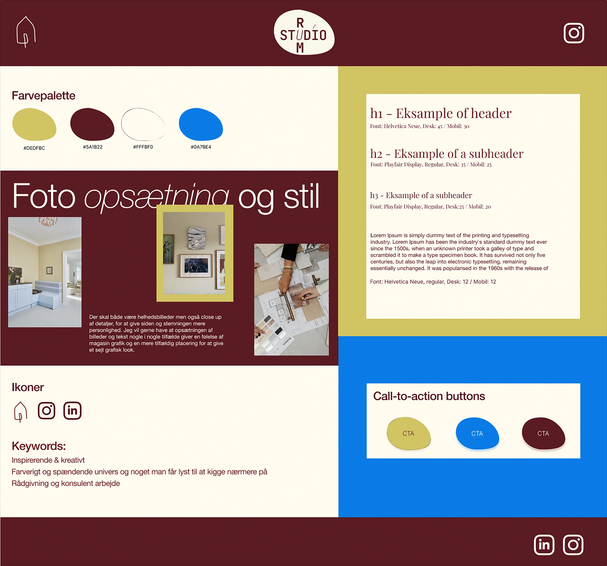
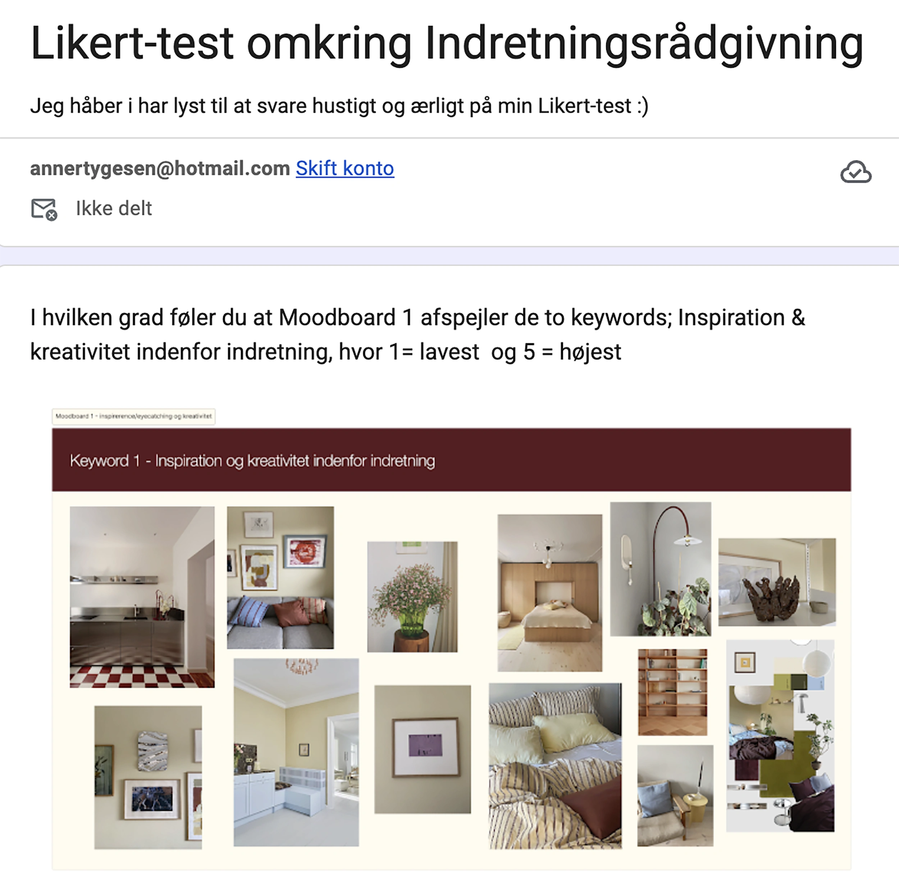
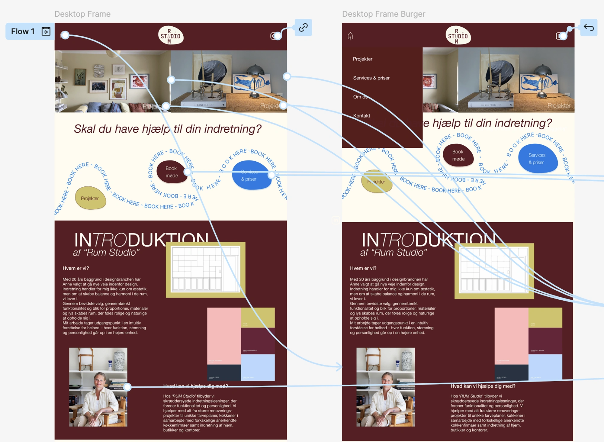
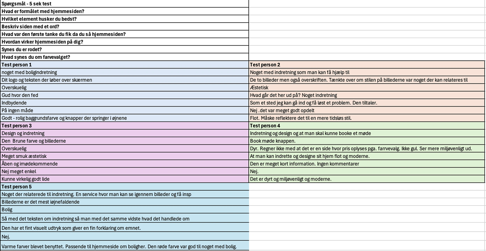
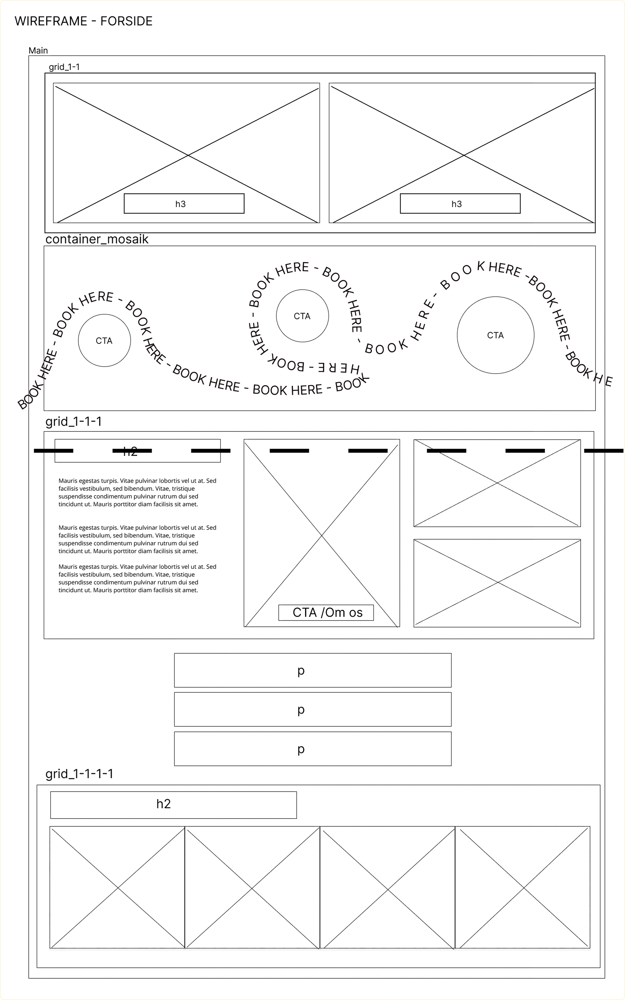
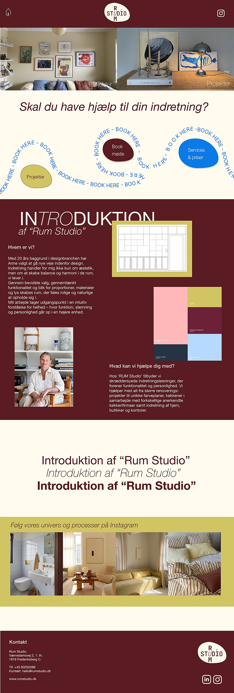

Projekter
03 UX/UI
Indretningssite


Løsning
Jeg har udviklet et indretningssite med fokus på UX/UI herunder brugeroplevelse, visuelt design og funktionalitet. Processen omfatter en kreativ del med alt fra research, moodboard og styletile til klikbar prototype og brugertests. Gennem forløbet har jeg udviklet et responsivt website baseret på brugerindsigter, wireframes og brugertests. Resultatet er et funktionelt og brugervenligt site med en tydelig visuel identitet, som er kodet i HTML og CSS og publiceret online vi Github.







Proces
Jeg arbejdede gennem en brugercentreret designproces fra research og idéudvikling til prototype, test og færdigt website. Undervejs anvendte jeg moodboard, styletile, logo sketching, wireframes (lo-fi og hi-fi) samt forskellige brugertests til at have indflydelse på mine designvalg, inden løsningen blev udviklet i HTML og CSS. Jeg implementerede mit logo som favicon i værktøjslinjen. Processen blev afslutningsvis kvalitetssikret gennem Lighthouse-test, dokumenteret og præsenteret.
Reflektion
Gennem projektet har jeg fået en større forståelse for processen bag udviklingen af et website – fra research og idéudvikling til det færdige produkt. Jeg lærte, hvor vigtig brugerinddragelse og brugertests er, for at sikre et intuitivt og brugervenligt site. Derudover var det en lærerig erfaring at omsætte mine egne lidt anderledes idéer og designs til et færdigt website gennem kodning som fx. det bevægende element og en form på mit site. Jeg har aldrig tænkt over at et favicon kan tilføjes. En vigtig læring har været, at alle faser i projektet bidrager til det endelige resultat, og at en gennemarbejdet proces kræver både tid, refleksion og løbende justeringer.